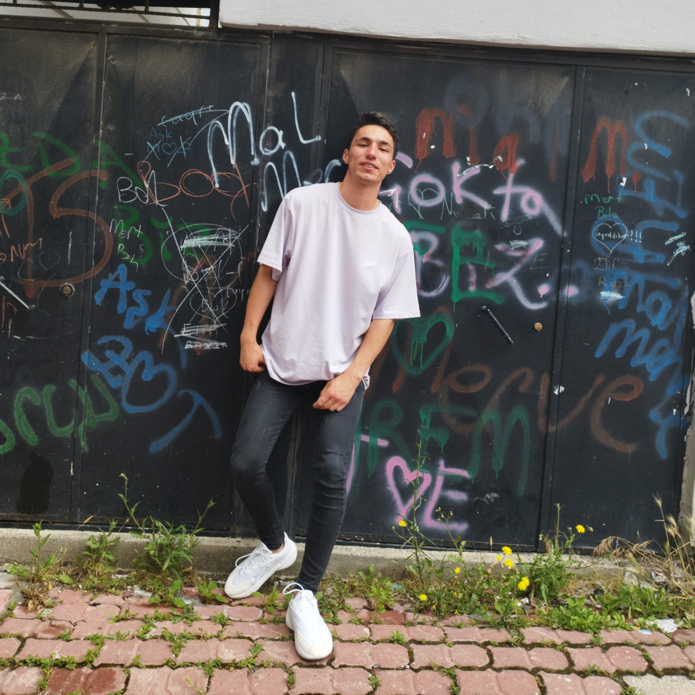

Beni Tanıyın
Anasayfa
Sosyal Medya
İletişim

2003 yılında Samsun/İlkadım'da dünyaya geldi. Bütün öğrenim hayatını 8 farklı okulda bitirdi.
OFAL'den 2020 yılında mezun oldu. Lise yılları başarısız olarak geçse de oldukça sosyaldi.
2022 yılında Atatürk Üniversitesi Elektrik-Elektronik Mühendisliği bölümünde üniversite eğitimine başladı. Çeşitli topluluklarda ve teknofest projelerinde aktif rol alıyor.
Bunlardan bazıları şunlardır:
- ATA YAPAY ZEKA VE TEKNOLOJİ TOPLULUĞU
- SAĞLIKTA YAPAY ZEKA TEKNOLOJİ TAKIMI
- ATA AIT TEAM
Daha üniversitenin ikinci yılına geçmesine rağmen
hem birçok projede yer alıyor hem de 6 farklı yazılım
dili biliyor olması onu daha da motive ediyor. Sağlıkta
Yapay Zeka Teknoloji Takımı ile model eğitimi, veri analizi,
veri işleme gibi alanlarda kendini eğitirken, ATA AIT TEAM'de
Siha takımının elektrik biriminde görev alıyor ve kendini orada
da geliştirmeye devam ediyor.
Yetkinlikler:
- C
- C++
- Html/Css
- Python
- Matlab
- Java
- R
- AutoCad
- EasyCad
B2 seviyesi ingilizce bilgisine sahip.